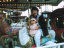
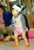

2000年12月5日 15時32分撮影
新梅田スカイビル 空中庭園展望台で。寒いヨォ～。2000年12月10日撮影
ちょっと早いけど「メリークリスマス！」
2000年11月25日撮影
奈良ドリームランドでお馬ちゃんに乗りました。2000年11月23日撮影
紅葉狩りをかねた「おばあちゃんお疲れ様会」を奈良・
正暦寺で行う。精進料理に舌づつみ！2000年11月18日撮影
初めてチャレンジする「スーパーボールすくい」。わけが
わからず３つも４つもすくおうと、とにかく大胆！
2000年11月18日撮影
由起子のひまわり組のお部屋では「おすもうくまさん」が
テーマ！ ビニールでまわしをしてもらい、土俵ではパパ
とすもうをとりました。2000年11月18日撮影
保育所の「作品展とふれあい広場」に参加して。
ママとキティちゃんのお面をつくりました。2000年11月15日撮影
おばあちゃんたちにすすめられ、ほんの少しお化粧しま
した。（口紅だけ） でもすぐペロリとなめちゃうのです。2000年11月15日撮影
髪飾りも着物も気に入った様で、とっても喜んでいました。
やっぱり「女の子」なんだなぁって思いました。2000年11月15日撮影
今日は由起子の七・五・三。
孫にも衣装．．．親ばかですが、とっても可愛かった！